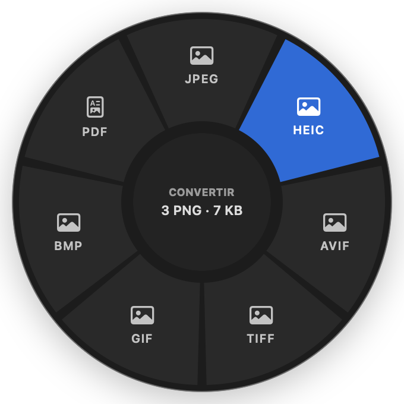
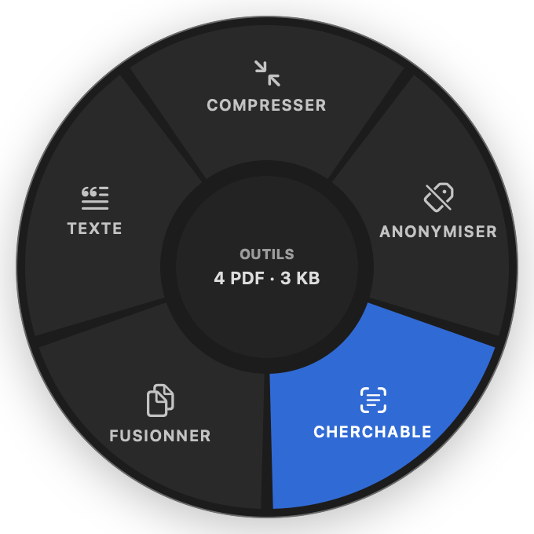
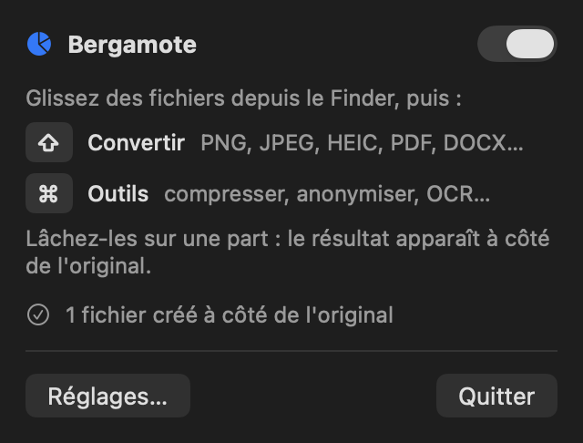

For macOS · Menu bar app
Drag a file.
Tap ⇧.
Drop it on a slice.
Bergamote is a radial file converter that lives in your menu bar. Convert, compress, anonymize or OCR any file without leaving Finder, and get the result right next to the original.
Free · macOS 14 Sonoma or later · Apple silicon and Intel

⇧How it works
One gesture, wherever you are.
No window to open, no menu to dig through. The wheel comes to your cursor.
Drag
Start dragging one or more files from Finder, the desktop or any app, and keep the mouse button down.
Tap ⇧ or ⌘
Shift opens the conversion wheel, Command the tools wheel. Holding the key before you drag works too. Both keys can be changed.
Drop
Release the files on a slice. The result appears next to the original, which is never modified or overwritten.
Features
Everything you reach for, in one wheel.
Convert
Images to PNG, JPEG, HEIC, AVIF, TIFF, GIF, BMP or PDF. PDF pages to images. Word, RTF and text to PDF and back.
Compress
Photos resized and re-encoded, PDF images optimized. If there is nothing to gain, nothing is written.
Anonymize
Remove GPS location, camera data and dates from photos, author and title from PDFs, keeping photos the right way up.
Make searchable
Add an invisible OCR text layer to scanned PDFs and images, so you can select, copy and search their text anywhere.
Merge and extract
Combine images and PDFs into a single PDF, or pull the text out of any document into a plain text file.
Stays out of the way
No window and no Dock icon: a pie in the menu bar, and a soft click as you move across the slices.
Two wheels
The slices adapt to your files.
Drag photos and you get image formats; drag PDFs and you get pages and text. A format your Mac cannot write is never offered.
⇧ Convert
For images, PDFs and text documents.

⌘ Tools
For images and PDFs.
Privacy
Your files never leave your Mac.
Not as a promise, but as a guarantee enforced by macOS.
- No network entitlement. The App Sandbox blocks every connection, whatever the code does.
- On-device only. Conversions use Apple's own frameworks, and OCR runs with Vision on your Mac.
- Minimal access. Bergamote only sees the files you drop on it, plus one folder permission you can revoke in Settings.
- No account, no telemetry. Nothing to sign up for, nothing reported back.

Install
Ready in a minute.
Download a release
- Download the latest Bergamote-x.y.z.zip from GitHub Releases.
- Unzip it and move Bergamote.app to Applications.
- Open it. A pie icon appears in the menu bar.
- The first time a result is saved, allow your home folder once: every folder inside it is covered.
Releases are not notarized yet. If macOS refuses to open the app the first time, right-click it and choose Open, or click Open Anyway in System Settings › Privacy & Security.
Build from source
Requires Xcode 16 or later.
git clone https://github.com/LoanALLARD/Bergamote.git
cd Bergamote
scripts/make-app.sh # build/Bergamote.app
open build/Bergamote.appTo start Bergamote with your Mac, add it in System Settings › General › Login Items.
Questions
Good to know.
Is Bergamote free?
Yes. It is free to download and use, and its source code is on GitHub.
Why does macOS ask me to allow my home folder?
Sandboxed apps can only write where you allow them. Dropping a file gives access to that file alone, so saving the result next to it needs permission for its folder. Allowing your home folder once covers every folder inside it. You can revoke it at any time in Settings.
Does it change my original files?
Never. Every result is a new file in the same folder. If a file with that name already exists, Bergamote adds a number, such as photo 2.jpeg.
Can I use other keys than ⇧ and ⌘?
Yes. Each wheel can be bound to Shift, Control, Option or Command in Settings, where you can also turn off the click sound.
Which languages does the interface support?
The interface is in French for now. OCR recognizes French and English text.